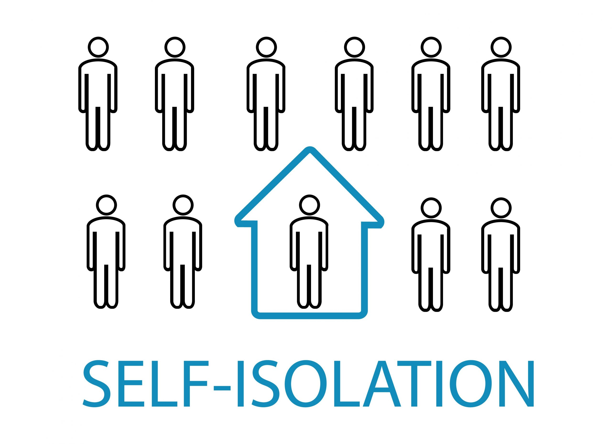

What is COVID 19 and how will it affect you?
COVID 19 is an infectious disease, in the Coronavirus disease family. COVID-19 symptoms and how seriously these will affect an individual is dependant on various variables.The 2 key factors that can influence the severity of illness are an individuals immune system and genetics. The video below explains this further.
What to do if you have COVID 19 symptoms?
As discussed in the clip above, coronavirus symptoms are classified as a continuous cough, high temperature or a change in sense of taste or smell. Government guidelines now state that an individual must self-isolate immediately, if you or somone you live with has these symptoms. Furthermore, if you do have symptoms the UK Government advises you to get a test within the first 8 days of your first symptoms.
What is Self-Isolation?
Self-Isolation requires an individual to not leave their household to help prevent the potential spread of the virus. The length of a self-isolation is dependant on individual circumstances. However, if you have tested positive for Covid-19 or have symptoms you will generally have to self-isolate for a period of 10 days, at least. Furthermore, any people in your shared household will also need to self-isolate.
